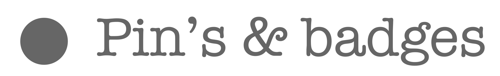
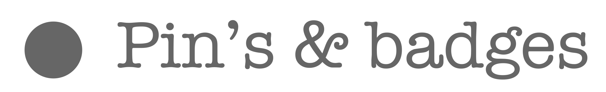
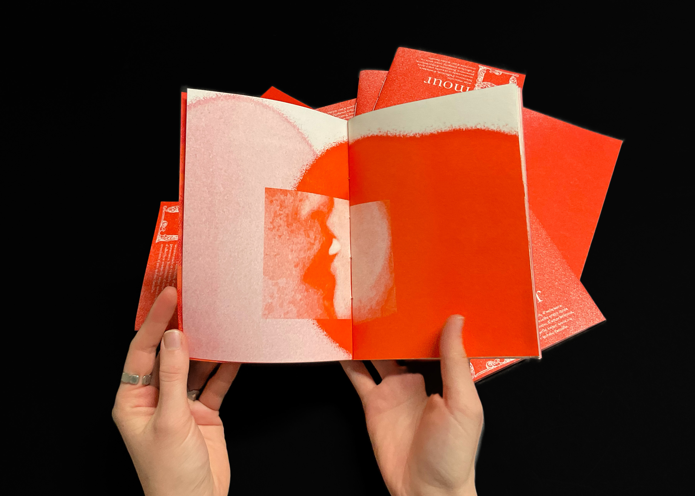

La demande était de réaliser un livret à imaginer comme une trace de l’humanité, à envoyer dans l’espace pour une potentielle forme de vie extraterrestre, à l’image du Golden Record envoyé en 1977. Risographie.
Par 3, nous avons décidé de concentrer notre vision de l’humanité sur l’Amour et les interractions physiques qu’il entraine. Pour cela nous avons mélangé photographies, qui montrent la gestuelle, et, en imaginant que cette vie extraterrestre n’ait pas nos codes humains, une forme de traduction visuelle par des dessins plus abstraits ou des traitements photographiques. Cette traduction laisse imaginer la chaleur des corps, des frissons, ou encore la puissance comme la légèreté de l’amour. Nous avons travaillé avec deux couleurs en risographie : le rouge, symbolique de l’amour, et l’orange pour nourrir cette douceur.
